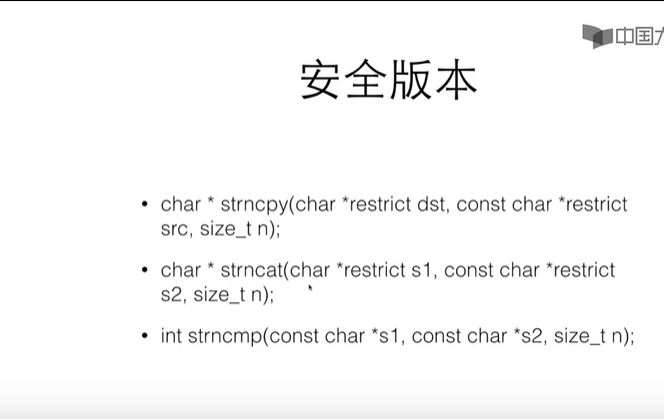

还是要继续学习，每天给自己打气。
char word[] = {'H','e','l','l','o'};这不是c语言的字符串，不能用字符串的方式做计算
char word[] = {'H','e','l','l','o','\0'};区别就是最后多了一个0，这就成为了字符串
char *str = "hello";
char word[] = "hello";
char line[10] = "hello";char *s = "hello world";char s[] = "hello , world!";char *str = "hello";
char word[] = "hello";数组：可以读，可以写
指针：只能读，不能修改
如果要构造一个字符串 ------>数组
如果要处理一个字符串 ------>指针
#include <stdio.h>
int main(void)
{
char *s = "hello world";
char *s1 = "hello world";
char s3[] = "hello world";
// 这个是不能修改的
// s[0] = 'B';
s3[0] = 'B';
printf("%p\n", s);
printf("%p\n", s1);
printf("%p\n", s3);
printf("Here! s[0]=%c\n", s[0]);
printf("Here! s3[0]=%c\n", s3[0]);
// 0000000000404000
// 0000000000404000
// 000000000062FE30
// Here! s[0]=h
// Here! s3[0]=B
return 0;
}char *t = 'title';
char *s;
s = t;并没有产生新的字符串，只是让指针s指向了t所指的字符串，对s的任何操作就是对t做的
char string[8];
scanf("%s" , string);
printf("%s" , string);scanf读入一个单词(到空格、tab、回车为止)
scanf是不安全的，因为不知道要读入的内容的长度
int putchar(int c);int getchar(void);#include <stdio.h>
#include <string.h>
int main(int argc, char const *argv[])
{
char line[] = "hello";
printf("strlen=%lu\n", strlen(line));
printf("sizeof=%lu\n", sizeof(line));
return 0;
}
//strlen=5
// 这个包括了字符串最后的0
//sizeof=6
当然了，也可以自己写一个函数来计算字符串长度
#include <stdio.h>
#include <string.h>
// 自定义方法来计算字符串长度
int mylen(const char *s)
{
int idx = 0;
while ( s[idx] != '\0' ){
idx++;
}
return idx;
}
int main(int argc, char const *argv[])
{
char line[] = "hello";
printf("strlen=%lu\n", mylen(line));
printf("sizeof=%lu\n", sizeof(line));
return 0;
}复制一个字符串
char *dst = (char*)malloc(Strlen(src)+1);
strcpy(dst , src);
但是这些函数都是不安全的，因为你不知道有没有足够的空间，所以
安全版本：如图

#include <stdio.h>
#include <string.h>
#include <stdlib.h>
int main(int argc, char const *argv[])
{
char s[] = "hello";
char *p = strchr(s, 'l');
// 找到第二个l
p = strchr(p+1,'l');
printf("%s\n", p);
return 0;
}复制给另一个
#include <stdio.h>
#include <string.h>
#include <stdlib.h>
int main(int argc, char const *argv[])
{
char s[] = "hello";
char *p = strchr(s, 'l');
char *t = (char*)malloc(strlen(p)+1);
strcpy(t,p);
printf("%s\n", t);
free(t);
// llo
return 0;
}